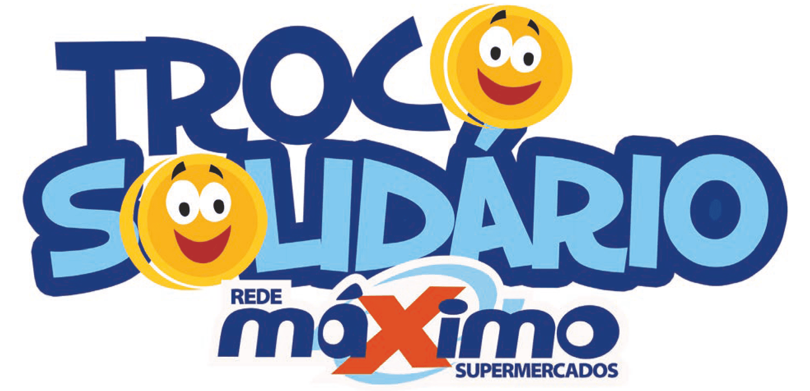
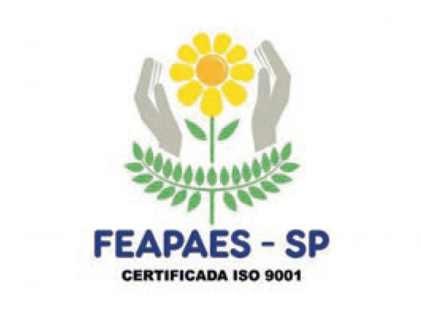
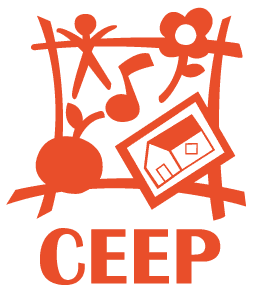
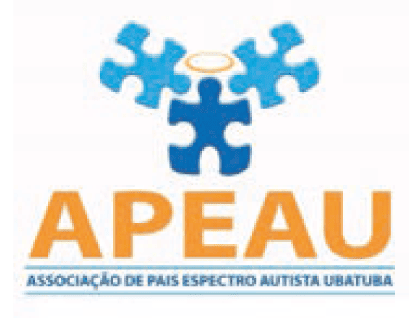
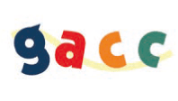
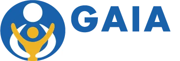

Rede Máximo nas Comunidades

O "Troco Solidário" é uma ação que representa muito mais do que uma simples doação: É um símbolo de união, empatia e compromisso com o bem-estar de nossas comunidades. Ao longo do últimos 8 anos, a ação tem incentivado os Clientes da Rede Máximo Supermercados a contribuir com o troco de suas compras para apoiar entidades que fazem diferença em nossa região, no Vale do Paraíba.
Com o Troco Solidário, as doações são direcionadas a cinco organizações que, com seu trabalho incansável, promovem um impacto positivo na vida de milhares de pessoas. São elas:

Feapaes (Federação das APAES de São Paulo) - Com um trabalho dedicado à inclusão de pessoas com deficiência, a Feapaes tem sido uma verdadeira referência em apoio educacional, social e profissional. Sua missão é garantir que pessoas com deficiência tenham os mesmos direitos e oportunidades de qualquer outra pessoa na sociedade.

CEEP ( Centro de Educação Especial de Pindamonhangaba ) - Esta instituição oferece suporte educacional e terapêutico para crianças com de ciência intelectual e múltiplas. O trabalho do CEEP contribui para a integração e autonomia de seus atendidos, promovendo a construção de um futuro mais inclusivo.

APEAU (Associação de Pais e Amigos dos Excepcionais de Ubatuba) - A APEAU desenvolve um trabalho essencial para a inclusão social e escolar de crianças e jovens com deficiência. Além disso, oferece apoio psicossocial e programas de profissionalização, ajudando a transformar realidades e quebrar barreiras.

GACC (Grupo de Apoio à Criança com Câncer) - O GACC dedica-se ao tratamento e apoio a crianças e adolescentes com câncer, oferecendo suporte emocional, psicológico e médico, além de ações de acolhimento e assistência para as famílias. Cada contribuição ajuda a transformar a luta contra a doença em uma jornada de esperança e superação.

Gaia (Grupo de Apoio ao Indivíduo com Autismo de SJC) - A Gaia é uma associação fundada por pais que buscam garantir o espaço e os direitos de pessoas com Transtorno do Espectro do Autismo (TEA). A GAIA repreenta a voz dessas famílias, lutando por representatividade e pelo pleno desenvolvimento humano.
Há oitos anos, o Troco Solidário tem sido um elo de solidariedade entre os consumidores e essas instituições essenciais. A cada pequena contribuição, a ação se fortalece, proporcionando mais qualidade de vida, inclusão e apoio a quem mais precisa. São mais de oito anos de união, em cidades como São José dos Campos, Tremembé, Campos do Jordão, Ubatuba, Guaratinguetá e Lorena, impactando positivamente as comunidades e as pessoas que mais necessitam de apoio.
Ao doar seu troco, você se torna parte de uma grande corrente do bem. Juntos, podemos continuar fazendo a diferença na vida de muitas pessoas, criando um futuro mais justo e solidário para todos. Porque, quando cada um de nós contribui, a transformação é coletiva.
Troco Solidário é uma ação que já dura nove anos, mas que, com o seu apoio, continuará a fazer a diferença sempre.